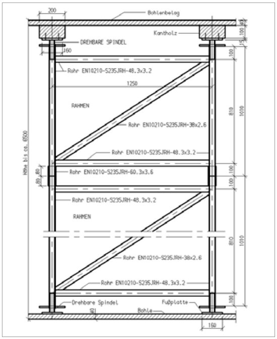
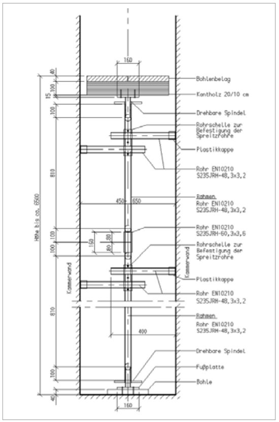
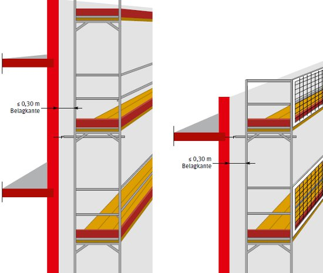
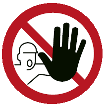

Bauarbeiten müssen von fachlich geeigneten, schriftlich bestellten Vorgesetzten geleitet werden. Sie müssen die vorschriftsmäßige Durchführung der Arbeiten gewährleisten.
Bauarbeiten müssen durch einen Aufsichtführenden beaufsichtigt werden.
Aufsichtführender ist, wer die Durchführung von Arbeiten zu überwachen und für die arbeitssichere Ausführung zu sorgen hat. Er muss hierfür ausreichende Kenntnisse und Erfahrungen besitzen sowie weisungsbefugt sein.
Der Unternehmer hat die Beschäftigten über die bei ihren Tätigkeiten auftretenden Gefahren sowie über die Maßnahmen zu ihrer Abwendung vor der Beschäftigung und danach in angemessenen Zeitabständen, mindestens jedoch einmal jährlich, zu unterweisen.
Vergibt der Unternehmer Arbeiten an andere Unternehmen oder übernimmt der Unternehmer Aufträge, deren Durchführung zeitlich und örtlich mit Aufträgen anderer Unternehmer zusammenfallen und werden dabei Beschäftigte mehrerer Unternehmer oder selbstständige Einzelunternehmer an einem Arbeitsplatz tätig, haben die Unternehmer hinsichtlich der Sicherheit und des Gesundheitsschutzes der Beschäftigten, entsprechend § 8 Abs. 1 Arbeitsschutzgesetz zusammenzuarbeiten. Insbesondere haben sie, soweit es zur Vermeidung einer möglichen gegenseitigen Gefährdung erforderlich ist, eine Person zu bestimmen, die die Arbeiten aufeinander abstimmt; zur Abwehr besonderer Gefahren ist sie mit entsprechender Weisungsbefugnis auszustatten.
Siehe § 6 der Unfallverhütungsvorschrift "Grundsätze der Prävention"
Unternehmer ist:
Als Koordinator geeignet sind z. B. Personen, die über
Übernimmt der Unternehmer Aufträge, deren Durchführung zeitlich und örtlich mit Aufträgen anderer Unternehmer zusammenfällt, so ist er verpflichtet, sich mit dem Koordinator des Bauherrn abzustimmen, soweit dies zur Vermeidung einer gegenseitigen Gefährdung erforderlich ist.
Mit Sicherungsaufgaben dürfen nur Personen betraut werden, die
Während des Sicherungseinsatzes dürfen sie nicht mit anderen Tätigkeiten betraut werden oder solche ausüben.
Sicherungsaufgaben sind z. B.:
Bauliche Anlagen und ihre Teile, Hilfskonstruktionen, Gerüste, Laufstege, Geräte und andere Einrichtungen müssen so bemessen, aufgestellt, unterstützt, verankert und beschaffen sein, dass sie die bei der vorgesehenen Verwendung anfallenden Lasten aufnehmen und ableiten können. Sie dürfen nicht überlastet werden und müssen auch während der einzelnen Bauzustände standsicher sein.
Der Unternehmer, der Hilfskonstruktionen, Gerüste und Laufstege benutzt oder benutzen lässt, hat sicherzustellen, dass diese in einem ordnungsgemäßen Zustand sind und während der Benutzung in ordnungsgemäßem Zustand gehalten werden. Kann das Gerüst nicht nach einer allgemein anerkannten Regelausführung errichtet werden, ist für das Gerüst oder einzelne Bereiche des Gerüsts eine Festigkeits- und Standfestigkeitsberechnung vorzunehmen. Eine Überprüfung der Standsicherheit und Tragfähigkeit ist insbesondere dann erforderlich, wenn die Arbeit längere Zeit unterbrochen worden ist oder Ereignisse eingetreten sind, die die Standsicherheit und Tragfähigkeit beeinträchtigen können. Mängel und Gefahrenzustände sind unverzüglich zu beseitigen.
Ereignisse, die die Standsicherheit und Tragfähigkeit beeinträchtigen können, sind z. B.:
Der Unternehmer hat auf der Grundlage der Gefährdungsbeurteilung für eine angemessene arbeitsmedizinische Vorsorge zu sorgen.
Siehe hierzu Verordnung zur arbeitsmedizinischen Vorsorge (ArbMedVV).
Der Unternehmer hat dafür zu sorgen, dass
Sanitätsräume siehe Abschnitt 4.3.4.
Der Unternehmer hat dafür zu sorgen, dass für die Erste-Hilfe-Leistung Ersthelfer mindestens in folgender Anzahl zur Verfügung stehen:
Siehe §§ 24 bis 28 der Unfallverhütungsvorschrift "Grundsätze der Prävention"
Das Erste-Hilfe-Material ist leicht zugänglich, gegen schädigende Einflüsse geschützt, bereitzuhalten, und zwar bei
Beschäftigt ein Unternehmer mehr als 50 Beschäftigte auf einer Baustelle, muss mindestens ein Sanitätsraum oder eine vergleichbare Einrichtung vorhanden sein.
Siehe: § 6 Arbeitsstättenverordnung
Technische Regel für Arbeitsstätten "Erste Hilfe Räume, Mittel und Einrichtung zur ersten Hilfe" (ASR A 4.3)
Sind auf einer Baustelle mehr als 100 Beschäftigte tätig, muss mindestens ein Betriebssanitäter vorhanden sein.
Die Pflicht zur Bereitstellung des Sanitätsraumes oder der vergleichbaren Einrichtung und des Betriebssanitäters obliegt dem Auftraggeber.
Bei Gefahr müssen die Arbeitsplätze über Rettungswege oder andere Rettungseinrichtungen verlassen werden können. Es muss sichergestellt sein, dass mindestens ein Rettungsweg oder eine Rettungseinrichtung, auch beim Ausfall der Energie, benutzbar ist
Siehe Technische Regel für Arbeitsstätten "Fluchtwege und Notausgänge, Fluchtund Rettungsplan" (ASR A 2.3)
Rettungswege oder Rettungseinrichtungen sind z. B.:
Zur Rettung von hochgelegenen oder schwer zugänglichen Arbeitsplätzen hat der Unternehmer geeignete Rettungsgeräte und Transportmittel bereitzuhalten sowie geeignetes Rettungspersonal einzusetzen.
Siehe auch DGUV Regel 112-199 "Retten aus Höhen und Tiefen mit persönlichen Absturzschutzausrüstungen".
Das können z. B. für hochgelegene Arbeitsplätze Einrichtungen sein, mit denen Verletzte beim Ausfall von Energie oder von Hebezeugen sicher abtransportiert werden können.
Eine derartige Einrichtung kann z. B. ein Abseilgerät/Rettungshubgerät in Verbindung mit einem Rettungs- bzw. Auffanggurt sein.
Vor Beginn der Bauarbeiten hat der Unternehmer im Rahmen einer Gefährdungsbeurteilung zu ermitteln, ob im vorgesehenen Arbeitsbereich Anlagen oder Stoffe vorhanden sind, durch die Beschäftigte gefährdet werden können.
Gefahren können ausgehen z. B. von:
Sind Anlagen oder Stoffe nach Abschnitt 4.4.1.1 vorhanden, müssen die erforderlichen Schutzmaßnahmen im Einvernehmen mit deren Eigentümern, Betreibern und gegebenenfalls den zuständigen Behörden festgelegt und durchgeführt werden. Die Arbeitserlaubnis für Arbeiten an in Betrieb befindlichen Anlagen und im Gefahrbereich ist vom Betreiber schriftlich einzuholen.
Für Anlagen, in denen mit dem Vorhandensein von Gefahrstoffen zu rechnen ist oder in denen das Auftreten von Gefahrstoffen vermutet werden kann, wird verwiesen auf
Bei unvermutetem Eintreten von Gefahren an Anlagen nach Abschnitt 4.4.1.1 sind die Arbeiten sofort zu unterbrechen. Der Aufsichtführende ist zu verständigen.
Arbeitsplätze und Verkehrswege an oder in der Nähe von Kran-, Förder- oder anderen Maschinenanlagen und an in Betrieb befindlichen Anlagen sind z. B. durch Begrenzung der gefahrbringenden Bewegungen, durch Abschrankungen, Warnposten oder Signaleinrichtungen zu sichern.
Bei Arbeiten in der Nähe elektrischer Freileitungen sind die Sicherheitsabstände nach Tabelle 1 einzuhalten. Das Ausschwingen von Leitungsseilen, Lasten, Trag- und Lastaufnahmemitteln ist zu berücksichtigen.
Können die Sicherheitsabstände nach Tabelle 1 nicht eingehalten werden, sind die Freileitungen im Einvernehmen mit deren Eigentümern oder Betreibern freizuschalten und gegen Wiedereinschalten zu sichern, abzuschranken oder abzudecken.
Siehe § 16 Abs. 2 der DGUV Vorschrift 38 und 39 "Bauarbeiten", und § 7 der DGUV Vorschrift 3 "Elektrische Anlagen und Betriebsmittel".
DIN VDE 0105-100:2009-10
Tabelle 1: Sicherheitsabstände
| Nennspannung | Sicherheitsabstand |
|---|---|
| bis 1000 V | 1,0 m |
| Über 1 kV bis 110 kV | 3,0 m |
| Über 110 kV bis 220 kV | 4,0 m |
| Über 220 kV bis 380 kV oder bei unbekannter Nennspannung |
5,0 m |
Bei Arbeiten in der Nähe von Mobilfunkantennen ist die Gefährdung durch elektromagnetische Felder gemäß DGUV Vorschrift 15 "Elektromagnetische Felder" zu beurteilen.
Ist für die Beschäftigten mit Gefahren aus dem Verkehr zu rechnen, sind im Einvernehmen mit deren Eigentümern, Betreibern und gegebenenfalls den zuständigen Behörden Sicherungsmaßnahmen festzulegen.
Insbesondere zur Absicherung gegen Gefahren
Der Arbeits- und Verkehrsbereich an oder in der Nähe des öffentlichen Straßenverkehrs oder benutzter Gleisanlagen im Benehmen mit dem Verkehrsträger ist durch Absperrungen, Sicherungsposten oder Signaleinrichtungen im Einvernehmen mit den Betreibern/Eigentümern zu sichern.
Besteht bei Bauarbeiten infolge der angewandten Arbeitsverfahren oder Arbeitsstoffe die Gefahr von Bränden und Explosionen, ist die TRGS 800 "Brandschutzmaßnahmen" und TRGS 720 – 722 "Gefährliche explosionsfähige Atmosphäre" zu beachten.
Während der Bauarbeiten müssen Blitzschutzmaßnahmen nach DIN EN 62305-3 (Blitzschutz Teil 3: Schutz von baulichen Anlagen und Personen) getroffen sein. Hebezeuge müssen in die Blitzschutzanlage einbezogen werden.
Arbeitsplätze müssen so eingerichtet und beschaffen sein sowie erhalten werden, dass sie sicher benutzt werden können. Dies gilt insbesondere hinsichtlich des Materials, der Abmessungen, Festigkeit, Standsicherheit, Oberflächenbeschaffenheit, Trittsicherheit, Beleuchtung und Belüftung sowie hinsichtlich des Fernhaltens von schädlichen Umwelteinflüssen und von Gefahren, die von Dritten ausgehen.
Zur Beurteilung sicherer Arbeitsplätze im Turm- und Schornsteinbau sind klimatische Einflüsse, wie z. B. Sturm, Gewitter, Regen, Schnee oder Vereisung, zu berücksichtigen.
Sicher benutzbare Arbeitsplätze können z. B. sein:
Auf geneigten Flächen, auf denen die Gefahr des Abrutschens von Personen besteht, darf nur gearbeitet werden, nachdem Maßnahmen gegen das Abrutschen getroffen worden sind.
An allen anderen Arbeitsplätzen ist bei der Benutzung von Leitern die TRBS 2121-2 und die DGUV Information 208-016 "Handlungsanleitung für den Umgang mit Leitern und Tritten" zu beachten.
Für Arbeitsplätze mit einem Tages-Lärmexpositionspegel von 80 dB(A) bzw. mit einem Spitzenschalldruckpegel 135 dB (C) und mehr gilt die Lärm- und Vibrations-Arbeitsschutzverordnung (LärmVibrationsArbSchV).
Arbeitsplätze müssen über sicher begeh- oder befahrbare Verkehrswege erreicht und verlassen werden können.
Als sichere Verkehrswege gelten z. B.:
Siehe auch:
DIN 18799-1, Ortsfeste Steigleitern an baulichen Anlagen - Teil 1: Steigleitern mit Seitenholmen, sicherheitstechnische Anforderungen und Prüfungen
Steigeisengänge siehe auch DGUV Regel 103-007 "Steiggänge für Behälter und umschlossene Räume" und bei Steigeisengängen an Schornsteinen DIN 1056.
Siehe auch DGUV Regel 112-198 "Benutzung von persönlichen Schutzausrüstungen gegen Absturz".
Arbeitsplätze mit mehr als 10 m Steigehöhe sollten gemäß TRBS 2121-1, Abs. 4.2
erreicht und verlassen werden können.
Ausnahmen sieht die TRBS 2121-1 in folgenden Situationen vor:
Bauliche Gegebenheiten, die den Einsatz von Leitern erforderlich machen, können
z. B. Platzmangel zur Aufstellung eines Treppenturmes in Industrieanlagen sein.
Geeignete Maßnahmen zur Anwendung von Leitern können der TRBS 2121 Teil 2 entnommen werden.
Hochziehbare Personenaufnahmemittel siehe DGUV Regel 103-007 "Sicherheitsregeln für hochziehbare Personenaufnahmemittel".
Zur sicheren Verwendung von Leitern als Verkehrsweg ist die TRBS 2121 Teil 2 in Verbindung mit der DGUV Information 208-016 "Handlungsanleitung für den Umgang mit Leitern und Tritten" zu berücksichtigen.
Leitern siehe auch:
Um die Absturzgefahr bei den Zugängen zu hochgelegenen Arbeitsplätzen auf Gerüsten zu vermeiden, eignen sich Aufzüge, Transportbühnen, Treppen oder Leitern.
Erläuterung:
Aufzüge, Transportbühnen oder Treppen sollten z. B. als Zugang zu Arbeitsplätzen
auf Arbeits- und Schutzgerüsten während der Benutzung verwendet werden, wenn:
Zu den umfangreichen Arbeiten zählen zum Beispiel Komplettsanierungen (innen/ außen) an Türmen und Schornsteinen.
Sind Aufzüge, Transportbühnen oder Treppen aufgrund der baulichen Gegebenheiten oder aufgrund der Gerüstkonstruktion nicht einsetzbar, können an deren Stelle Leitern verwendet werden.
Bauliche Gegebenheiten, die den Einsatz von Leitern erforderlich machen, können z. B. sein:
Werden Anlegeleitern als Verkehrsweg benutzt, darf die mögliche Absturzhöhe von der Leiter nicht mehr betragen als die jeweilige Aufstiegshöhe.
Verkehrswege müssen mit mindestens 20 Lux beleuchtet sein. Bei Ausfall der Allgemeinbeleuchtung muss für Flucht- und Rettungswege nach Abschnitt 4.3.6 eine Sicherheitsbeleuchtung von mindestens 1 Lux gewährleistet sein.
Laufstege müssen mindestens 0,50 m breit sein. Sie müssen Trittleisten haben, wenn sie steiler als 1:5 (etwa 11°) sind; sie müssen Stufen haben, wenn sie steiler als 1:1,75 (etwa 30°) sind.
Arbeitsplätze an turmartigen baulichen Anlagen mit mehr als 60 m Höhe im Endzustand müssen über Personenaufzüge erreichbar sein, sobald Arbeitsplätze mehr als 20 m über dem umgebenden Gelände liegen.
Siehe § 10 Abs. 7 der DGUV Vorschrift 38 und 39 "Bauarbeiten"
Abschnitt 4.6.5.1 gilt nicht für
Personenbeförderung siehe auch DGUV Regel 101-005 "Hochziehbare Personenaufnahmemittel"
Müssen Arbeiten an hochgelegenen Arbeitsplätzen ausgeführt werden, so sind die Arbeitsmittel einzusetzen, die am geeignetsten sind, um während ihrer Benutzung sichere Arbeitsbedingungen auf Dauer zu gewährleisten. Dabei muss dem kollektiven Gefahrenschutz (Geländer) Vorrang vor dem individuellen Gefahrenschutz (persönliche Schutzausrüstung gegen Absturz) eingeräumt werden. Das ausgewählte Arbeitsmittel muss der Art der auszuführenden Arbeiten und den vorhersehbaren Beanspruchungen angepasst sein und eine gefahrlose Benutzung erlauben.
Werden Arbeitsgerüste verwendet, ist beim Auf-, Ab- und Umbau sowie bei der Benutzung die Betriebssicherheitsverordnung Anhang 1 Nr. 3 (konkretisiert in der TRBS 2121-1 in Verbindung mit der DGUV Information 201-011 "Handlungsanleitung für den Umgang mit Arbeits- und Schutzgerüsten") zu berücksichtigen.
Es dürfen nur Arbeitsgerüste und Arbeitsbühnen aufgebaut und verwendet werden, deren Brauchbarkeit nachgewiesen ist. Die Unterlagen darüber müssen auf der Baustelle vorhanden sein.
Für Gerüste und Gerüstbereiche, die nicht nach einer allgemein anerkannten Regelausführung errichtet werden, ist für die Brauchbarkeit ein Standsicherheitsnachweis auf Grundlage der Technischen Baubestimmungen der bauordnungsrechtlichen Vorschriften der Länder zu erbringen.
Der Standsicherheitsnachweis gilt als erbracht, wenn eine allgemeine bauaufsichtliche Zulassung durch das Deutsche Institut für Bautechnik (DIBt) erteilt wurde, ein allgemeines bauaufsichtliches Prüfzeugnis, eine Zustimmung im Einzelfall auf Grundlage der Bauordnungen der Länder vorliegt oder eine Gerüstkonfiguration nach DIN 4420-3:2006-01 errichtet wurde.
Für ein Ofenkammergerüst nach den Bildern 1 und 2 gilt der Brauchbarkeitsnachweis als erbracht, wenn dieses mit nicht mehr als 300 kg/m² belastet wird.

Abb. 1 Ofenkammergerüst

Abb. 2 Ofenkammergerüst
In Gerüsten aus vorgefertigten Bauteilen, wie z. B. Rahmen- oder Modulgerüsten, müssen die Systembauteile gemäß der Aufbau- und Verwendungsanleitung verwendet werden.
Da die Belagteile in diesen Gerüsten gleichzeitig Aussteifungselemente sind, müssen diese auf volle Gerüstbreite eingebaut sein. Die Belagteile sind gegen unbeabsichtigtes Ausheben zu zu sichern.
Werden Gerüstbretter oder -bohlen in systemfreien Arbeitsgerüsten eingesetzt, dürfen diese nur mit den Mindestquerschnitten nach Tabelle 2 in Abhängigkeit von der Stützweite verwendet werden.
Tabelle 2: zulässige Stützweiten (in m)
| Lastklasse | Brett- oder Bohlenbreite cm | Brett - oder Bohlendicke cm | ||||
|---|---|---|---|---|---|---|
| 3,0 | 3,5 | 4,0 | 4,5 | 5,0 | ||
| 1, 2, 3 | 20 | 1,25 | 1,50 | 1,75 | 2,25 | 2,50 |
| 24 und 28 | 1,25 | 1,75 | 2,25 | 2,50 | 2,75 | |
| 4 | 20 | 1,25 | 1,50 | 1,75 | 2,25 | 2,50 |
| 24 und 28 | 1,25 | 1,75 | 2,00 | 2,25 | 2,50 | |
| 5 | 20, 24, 28 | 1,25 | 1,25 | 1,50 | 1,75 | 2,00 |
| 6 | 20, 24, 28 | 1,00 | 1,25 | 1,25 | 1,50 | 1,75 |
Anmerkung: Bretter und Bohlen müssen mindestens der Sortierklasse S 10 nach DIN 4074-1:2008-12 entsprechen
Tabelle 2 a: Lastklassen der Arbeitsgerüste
| Lastklasse | gleichmäßig verteilte Last kN/m2 | Teilflächenlast kN/m2 |
|---|---|---|
| 1 | 0,75 | – |
| 2 | 1,5 | – |
| 3 | 2,0 | – |
| 4 | 3,0 | 5,0 |
| 5 | 4,5 | 7,5 |
| 6 | 6,0 | 10,0 |
Jede benutzte Gerüstlage muss voll ausgelegt sein. Gerüstbretter und -bohlen müssen dicht aneinander liegen und so verlegt sein, dass sie nicht wippen, kippen und ausweichen können. Ist an den Stößen nur eine Unterstützung vorhanden, müssen sich die Bretter und Bohlen auf beiden Seiten der Unterstützung um mindestens 0,20 m überdecken.
Als Gerüstträger für Trägergerüste dürfen nur bauaufsichtlich zugelassene und statisch nachgewiesene Gerüstträger verwendet werden. Die Trägergerüste sind vollflächig mit Gerüstbohlen auszulegen, die mindestens der Sortierklasse S10 gem. DIN 4074 T1 und T5 entsprechen müssen und die in Abhängigkeit von der vorgesehenen Lastklasse und Stützweite gem. Tabelle 2 und 2 a, Abs. 4.5.7.1 dimensioniert werden müssen.
Es ist vom Unternehmer ein Plan für die Montage, Benutzung und Demontage der Trägergerüste zu erstellen, der eine sichere Montage, Benutzung und Demontage gewährleistet.
Trägergerüste dürfen nur unter der Aufsicht einer fachkundigen Person und von fachlich geeigneten Beschäftigten auf-, um- oder abgebaut werden, die speziell für diese Arbeiten eine angemessene Unterweisung gemäß § 12 der Betriebssicherheitsverordnung erhalten haben, die sich insbesondere auf Folgendes erstreckt:
Förderöffnungen in Trägergerüsten sind bei Gefahr des Verhakens oder Aufsetzens mit Einfahrttrichter zu versehen und durch Seitenschutz abzusichern.
Trägergerüste sind Gerüste, bei denen der Belag auf Gerüstträgern liegt, die auf mindestens zwei Auflagern ruhen. Die Länge der Gerüstträger kann verstellbar sein.
Die größte Auszugslänge längenverstellbarer Gerüstträger muss konstruktiv begrenzt oder deutlich erkennbar und dauerhaft gekennzeichnet sein. Die verstellbaren Trägerteile sind miteinander ausreichend fest zu verbinden.
Die Gerüstträger müssen auf jeder Seite mindestens 6 cm auf ausreichend tragfähigen Bauteilen aufliegen.
Werden hängende Arbeitsbühnen verwendet, die mit Winden, Hub- und Zuggeräten auf oder abwärts bewegt werden, ist die DGUV Regel 101-005 "Hochziebare Personenaufnahmemittel" zu beachten.
Werden hängende Arbeitsbühnen verwendet, hat der Unternehmer deren ersten Einsatz auf jeder Baustelle dem Unfallversicherungsträger mindestens 14 Tage vor der Arbeitsaufnahme schriftlich anzuzeigen.
Befinden sich während des Verfahrens der Arbeitsbühne Personen auf dieser, sind Bau und Ausrüstung der Arbeitsbühne gemäß 9. Verordnung zum Produktsicherheitsgesetz (ProdSV) zu beurteilen.
Eine Absturzgefahr besteht, wenn eine Absturzhöhe von mehr als 1 m vorhanden ist.
Bei der Festlegung der Schutzmaßnahmen muss dem kollektiven Gefahrenschutz (Absturzsicherungen/Auffangeinrichtungen) Vorrang vor dem individuellen Gefahrenschutz (persönliche Schutzausrüstung gegen Absturz) eingeräumt werden.
Siehe Technische Regeln für Arbeitsstätten - "Schutz vor Absturz und herabfallenden Gegenständen, Betreten von Gefahrenbereichen" (ASR A 2.1)
Siehe § 12 Abs. 1 der DGUV Vorschrift 38 und 39 "Bauarbeiten"
Siehe DIN EN 13374 "Temporäre Seitenschutzsysteme"
Die Schutzmaßnahmen sind entsprechend der nachstehenden Rangfolge auszuwählen:
Absturzsicherungen sind z. B. Abdeckungen, Geländer oder Seitenschutz, die auftretende Kräfte aufnehmen und ableiten können.
Als Absturzsicherung muss Seitenschutz vorhanden sein:

Abb 3: Beispiel für ein Gerüst mit Seitenschutz und Schutzwand
Davon abweichend ist Seitenschutz nicht erforderlich, wenn
Seitenschutz muss aus Geländerholm, Zwischenholm und Bordbrett bestehen (siehe Abbildung 3).
Geländerholm und Zwischenholm müssen gegen unbeabsichtigtes Lösen, das Bordbrett gegen Kippen gesichert sein.
Die Oberkante des Seitenschutzes muss mindestens 1,00 m ± 0,05 m über dem Gerüstbelag liegen.
Als Geländer- und Zwischenholm dürfen ohne statischen Nachweis verwendet werden,
Bordbretter aus Holz müssen einen Mindestquerschnitt von 15 cm x 3,0 cm haben; sie müssen den Belag um mindestens 15 cm überragen.
Lassen sich aus arbeitstechnischen Gründen Absturzsicherungen nicht verwenden, müssen an deren Stelle Schutzeinrichtungen zum Auffangen abstürzender Beschäftigter vorhanden sein.
Auffangeinrichtungen sind z. B. Schutznetze, Schutzwände, Schutzgerüste, die auftretende Kräfte aufnehmen und ableiten können.
Auffangnetze müssen der DGUV Regel 101-011 "Einsatz von Schutznetzen" und DIN EN 1263-1:2002-07 entsprechen.
Fanggerüste müssen DIN 4420-1 entsprechen.
Können Absturzsicherungen und Auffangeinrichtungen nicht angewendet werden, sind persönliche Schutzausrüstungen gegen Absturz vorzusehen.
Die Verwendung von persönlichen Schutzausrüstungen gegen Absturz setzt eine weitere Gefährdungsbeurteilung für diesen Einzelfall voraus.
Für die Benutzung von persönlichen Schutzausrüstungen gegen Absturz hat der Unternehmer eine Betriebsanweisung zu erstellen. Die Inhalte der Betriebsanweisung sind den Beschäftigten im Rahmen von Unterweisungen mit Übungen zu vermitteln.
Für die Verwendung von persönlichen Schutzausrüstungen gegen Absturz müssen geeignete Anschlageinrichtungen vorhanden sein
Anschlageinrichtungen sind z. B. dann geeignet, wenn sich das befestigte Auffangsystem nicht von der Anschlageinrichtung lösen kann und die Tragfähigkeit für eine Person nach den technischen Baubestimmungen für eine Kraft von 9 kN (Einwirkung x Bemessungsbeiwert: 6 kN x 1,5 [DIN 4426]) eingeleitet in die Konstruktion durch den Auffangvorgang, einschließlich den für die Rettung anzusetzenden Lasten (z. B. Gewicht der aufgefangenen Person), nachgewiesen ist. Für jede weitere Person ist die Einwirkung um 1 kN bzw. sind die Lasten entsprechend zu erhöhen.
Persönliche Schutzausrüstungen gegen Absturz siehe DGUV Regel 112-198 "Benutzung von persönlichen Schutzausrüstungen gegen Absturz"
Wenn Eigenart und Fortgang der Tätigkeit und Besonderheiten des Arbeitsplatzes die vorgenannten Schutzmaßnahmen nicht zulassen, darf auf die Anwendung von persönlichen Schutzausrüstungen gegen Absturz im Einzelfall nur dann verzichtet werden, wenn:
Steigeisen- und Steigleitergänge müssen:
ausgerüstet sein.
Siehe Technische Regeln für Arbeitsstätten: Arbeitsstättenrichtlinien "Verkehrswege" (ASR A 1.8) und
"Schutz vor Absturz und herabfallenden Gegenständen, Betreten von Gefahrenbereichen" (ASR A 2.1)
DIN 18799, Teil 1 und 2 "Ortsfeste Steigleitern an baulichen Anlagen"
DGUV Information 201-014 "Regeln für das Nachrüsten von Steigeisen- und Steigleitergängen mit Steigschutzeinrichtungen an Schornsteinen"
An Öffnungen in Böden, Decken und Dachflächen bis 22,5° Neigung sowie Vertiefungen und nicht durchtrittsicheren Abdeckungen müssen Einrichtungen vorhanden sein, die ein Abstürzen, Hineinfallen oder Hineintreten von Personen verhindern.
Als Öffnungen gelten
Dies bedeutet, dass die Öffnungen oder Vertiefungen umwehrt oder begehbar und unverschieblich abgedeckt oder mit tragfähigem Material (z. B. Holz) verfüllt oder ausgefüttert sind.
Der Unternehmer hat dafür zu sorgen, dass an übereinanderliegenden Stellen nicht gleichzeitig gearbeitet wird. Lässt sich dies aus technischen Gründen nicht vermeiden, so sind die unteren Arbeitsplätze und Verkehrswege gegen herabfallende, umstürzende, abgleitende oder abrollende Gegenstände und Massen zu schützen.
Ein Schutz der unteren Arbeitsplätze kann erreicht werden z. B. durch:
Bereiche, die durch herabfallende, umstürzende oder abrollende Gegenstände und Massen gefährdet sein können (Gefahrbereiche) sind vom Vorgesetzten nach Abschnitt 4.1.1 oder vom Koordinator nach Abschnitt 4.1.4 festzulegen.
Gefahrbereiche müssen durch eine Absperrung so gesichert sein, dass ein unbewusstes Betreten verhindert wird. Sie müssen außerdem durch das Warnzeichen "Allgemeines Warnzeichen" (W001) gekennzeichnet sein. Eine Absperrung durch Absperrband ist nicht zulässig.
Siehe Technische Regeln für Arbeitsstätten "Sicherheitskennzeichnung" (ASR A 1.3)
Ein kurzzeitig bestehender Gefahrbereich darf abweichend von Abschnitt 4.7.2.2 durch Warnposten gesichert werden.
Die Warnposten sind dabei so aufzustellen, dass der gesamte Gefahrenbereich überwacht werden kann.
Gegebenfalls sind die Warnposten mit Kommunikationsmitteln auszustatten.
Der Unternehmer hat dafür zu sorgen, dass ein Gefahrbereich nach Tabelle 3 festgelegt wird. Dabei ist jeweils von der äußeren Kante des Bauwerks auszugehen.
Tabelle 3 Radius des Gefahrbereichs um die jeweiligen Arbeitsplätze
| Jeweilige Höhe h der baulichen Anlage (m) | Erforderlicher Radius abhängig von h | Erforderlicher Mindestradius in m |
|---|---|---|
| h bis 60 | h/5 | 8,00 |
| h > 60 bis 100 | h/5 | 12,50 |
| h > 100 bis 150 | h/6 | 20,00 |
| h > 150 bis 200 | h/7 | 25,00 |
| h > 200 | h/8 | 30,00 |
Der Unternehmer hat dafür zu sorgen, dass der Gefahrbereich durch eine feste Absperrung so gesichert wird, dass ein unbewusstes Betreten verhindert wird.

Der Gefahrenbereich ist deutlich erkennbar in geeigneten Abständen und dauerhaft durch das Verbotszeichen "Zutritt für Unbefugte verboten" (D-P006) zu kennzeichnen.Siehe Technische Regeln für Arbeitsstätten "Sicherheitskennzeichnung" (ASR A 1.3)
Geeignete feste Absperrungen sind z. B. Bauzäune, Geländerkonstruktionen aus Holz oder Gerüstbauteilen oder fest in ca. 1 m Höhe aufgehängte rot-weiße Ketten. Eine Absperrung aus Flatterband stellt keine geeignete Absperrung dar.
Ein Betreten des Gefahrenbereiches ist mit dem Aufsichtführenden abzustimmen.
Arbeitsplätze im Gefahrbereich sind zu vermeiden. Ist dies technisch nicht möglich, müssen Schutzeinrichtungen nach den Abschnitten 4.9.4.2 bis 4.9.4.6 vorhanden sein.
Hochgelegene Arbeitsplätze müssen
Werkstoffe von Planen oder Geweben als Bekleidungen müssen eine Reißfestigkeit von mindestens 500 N/5 cm aufweisen und UV-stabilisiert sein.
Bekleidungen müssen dicht an allen Ständern des Arbeitsgerüstes nach DIN EN 12811-1 befestigt sein. Sie dürfen auch im Bereich ihrer Stöße keine größeren Öffnungen als 4 cm2 aufweisen, wobei ein Maß nicht mehr als 2,5 cm betragen darf.
Unten gelegene Arbeitsplätze müssen innerhalb des gesamten Gefahrbereiches durch waagerechte Schutzdächer überdeckt sein.
Abweichend von Abschnitt 4.9.4.3 sind Schutzdächer zulässig, die
Der Unternehmer hat dafür zu sorgen, dass Schutzdächer nach DIN 4420-1 bemessen werden. Als Abdeckung sind zwei Lagen kreuzweise verlegter Gerüstbohlen (Querschnitt mindestens 25 cm x 5 cm) mit dazwischenliegender Dämmschicht von mindestens 10 cm Dicke zu verwenden.
Werden auf Arbeitsplätzen, die über einem Schutzdach liegen, Bauteile oder Baumaterialien während des Einbaues über den Seitenschutz hinweggeschwenkt, muss das Schutzdach gemäß Abschnitt 4.9.4.4 um das Maß verbreitert werden, um welches das Bauteil über den Seitenschutz hinausragt.
Dachkonstruktionen von vorhandenen baulichen Anlagen im Gefahrbereich gelten als Schutzdächer, wenn sie mindestens die Anforderungen nach Abschnitt 4.9.4.5 erfüllen.
Baumaterialien sind z. B. Bewehrungsstäbe.
Der Unternehmer hat dafür zu sorgen, dass Verkehrswege im Gefahrbereich vermieden werden. Ist dies technisch nicht möglich, hat er dafür zu sorgen, dass die über den Verkehrswegen gelegenen Arbeitsplätze nach Abschnitt 4.9.4.3 gesichert sind.
Verkehrswege im Gefahrbereich müssen
Sollte aus technischen Gründen ein Abwerfen erforderlich sein, so ist sicherzustellen, dass sich im Gefahrenbereich gemäß Abschnitt 4.9.3 keine Personen aufhalten (eingeschlossen sind auch Arbeitsplätze unter Schutzdächern gem. Abschnitt 4.9.4.3 bis 4.9.4.6 und Verkehrswege unter Schutzdächern gem. Abschnitt 4.9.5.2).
Alternativ sind zum Abwerfen von Gegenständen und Massen an Türmen geschlossene Rutschen bis zur Übergabestelle zu verwenden. Beim Abbruch von Schornsteinen sollte das Abbruchmaterial nach innen abgeworfen werden.
Einrichtungen zum Befördern von Personen in Verbindung mit Hebezeugen müssen gemäß der 9. Verordnung zum Produktsicherheitsgesetz (ProdSV) beschaffen sein.
Der Betrieb muss gemäß BetrSichV Anhang 1 Nummer 3 "Besondere Vorschriften für die Verwendung von Arbeitsmitteln bei zeitweiligem Arbeiten auf hoch gelegenen Arbeitsplätzen" und DGUV Regel 101-005 "Hochziehbare Personenaufnahmemittel" erfolgen.
Einrichtungen zum Befördern von Lasten müssen nach der BetrSichV, Anhang 1 Nummer 2 "Besondere Vorschriften für die Verwendung von Arbeitsmitteln zum Heben von Lasten" und nach den Unfallverhütungsvorschriften und Regeln:
betrieben werden.
Für Schweiß-, Schneid- und verwandte Arbeiten ist die DGUV Regel 100-500 "Betreiben von Arbeitsmitteln", Kapitel 2.26, zu beachten.
Der Unternehmer hat den Beschäftigten für Arbeiten im Feuerfest-, Turm und Schornsteinbau die folgenden persönlichen Schutzausrüstungen als Grundausstattung zur Verfügung zu stellen:
Nach § 2 der PSA-Benutzungsverordnung müssen bei der gleichzeitigen Benutzung mehrerer persönlicher Schutzausrüstungen diese so aufeinander abgestimmt sein, dass die Schutzwirkung der einzelnen Ausrüstungen nicht beeinträchtigt wird.
In Abhängigkeit von den auszuführenden Arbeiten und im Ergebnis der Gefährdungsbeurteilung hat der Unternehmer zusätzlich zu der Grundausstattung nach Abschnitt 4.10.1.1 weitere persönliche Schutzausrüstungen zur Verfügung zu stellen.
Die Beschäftigten sollen dazu angehalten werden, bei Arbeiten unter Hitzeeinwirkung keine Wäschestücke aus leicht schmelzenden Kunststoffen, z. B. Nylon, Perlon, zu tragen. Geeignet sind Wäschestücke aus Baumwolle.
Als Hitzeschuhe sollen halbhohe Sicherheitsschuhe oder -stiefel getragen werden, um zu verhindern, dass bei Heißarbeiten heißes Material in die Schuhe fallen kann.
Die Arbeitshose soll über die Hitzeschuhe oder -stiefel reichen. Die Abdichtung zwischen Arbeitshose und Hitzeschuhen kann auch mit Gamaschen erfolgen.
Hitzeschuhe werden auch mit durchtrittsicherem Unterbau hergestellt. Solche Schuhe sind zu benutzen, wenn neben der Hitze mit dem Eintreten in spitze, scharfe Gegenstände zu rechnen ist.
Der Unternehmer hat die Beschäftigten vor der ersten Benutzung und nach Bedarf, mindestens jedoch einmal jährlich, zu unterweisen. Für einige PSA sind die Angaben in der Betriebsanweisung im Rahmen von Übungen zu vermitteln (z. B. PSA gegen Absturz, Atemschutz, Chemikalienschutzausrüstungen).
Die Beschäftigten haben die zur Verfügung gestellten persönlichen Schutzausrüstungen bestimmungsgemäß zu benutzen. Sie haben die persönlichen Schutzausrüstungen vor der Benutzung auf ordnungsgemäßen Zustand und erkennbare Mängel zu prüfen. Mangelhafte persönliche Schutzausrüstungen dürfen nicht benutzt werden.
Vorgefertigte Bauteile müssen für die ungünstigsten Beanspruchungen bemessen sein, die beim Lagern, beim Transport oder durch die Transportlage während des Einbaus und im endgültigen Zustand entstehen können.
Vorgefertigte Bauteile sind solche, die üblicherweise nicht von Hand, sondern mit Hilfe von Hebezeugen versetzt werden.
Transportlagen sind z. B. Kopf-, Schräg- oder Seitenlage sowie Stützung nur im Schwerpunkt.
Transportanker in vorgefertigten Bauteilen müssen nach der DGUV Regel 101-001 "Sicherheitsregeln für Transportanker und -systeme von Betonfertigteilen" bemessen, geprüft, eingebaut und verwendet werden.
Die Standsicherheit der vorgefertigten Bauteile muss auch während der einzelnen Montagezustände gewährleistet sein. Alle planmäßigen Horizontallasten sind zu berücksichtigen.
Planmäßige Horizontallasten entstehen z. B. durch gewollte Schrägstellung des Bauteils.
Es muss eine schriftliche Montageanweisung auf der Baustelle vorliegen, die alle erforderlichen sicherheitstechnischen Angaben und Maßnahmen, einschließlich der des Herstellers der Bauteile, enthält.
Sicherheitstechnische Angaben können je nach Schwierigkeitsgrad der Montagearbeiten z. B. sein:
Zu den sicherheitstechnischen Maßnahmen zählen z. B. Maßnahmen:
Weiterhin gehören zur Montageanweisung Übersichtszeichnungen oder -skizzen mit den vorzusehenden Arbeitsplätzen und deren Zugängen. Übersichtszeichnungen und Verlegepläne ohne zusätzliche Angaben ersetzen nicht die Montageanweisung.
Vorgefertigte Bauteile sollten bis zur Montage durch Positionsnummern deutlich erkennbar und dauerhaft gekennzeichnet sein.
Auf jedem Betonfertigteil im Turm- und Schornsteinbau müssen deutlich erkennbar und dauerhaft angegeben sein:
Betonfertigteile im Turm- und Schornsteinbau von gleichen äußeren Abmessungen, aber mit verschiedener Bewehrung, Betonfestigkeitsklasse oder Betondeckung, müssen unterschiedlich gekennzeichnet sein.
Vorgefertigte Bauteile sind vor dem Transport und vor dem Einbau auf sichtbare Beschädigungen, Verformungen und Risse im Hinblick auf ihre Tragfähigkeit zu prüfen.
Vorgefertigte Bauteile müssen so gelagert, angeschlagen, transportiert und eingebaut werden, dass Beschädigungen vermieden werden, die ihre Standsicherheit oder Tragfähigkeit beeinträchtigen können.
Beim Transportieren vorgefertigter Bauteile mit Hilfe von Vakuumhebern oder Spreizankern muss das Fertigteil zusätzlich gegen Herabfallen gesichert sein.
Der Unternehmer hat dafür zu sorgen, dass Betonfertigteile vor dem Transport und vor dem Einbau auf sichtbare Beschädigungen, Verformungen und Risse im Hinblick auf ihre Tragfähigkeit geprüft werden.
Der Unternehmer hat dafür zu sorgen, dass Betonfertigteile so gelagert, angeschlagen, transportiert und eingebaut werden, dass Beschädigungen vermieden werden, die ihre Standsicherheit oder Tragfähigkeit beeinträchtigen können.
Der Unternehmer hat dafür zu sorgen, dass Betonfertigteile so gelagert, transportiert und eingebaut werden, dass sie ihre Lage nicht unbeabsichtigt verändern können.
Eine Lageänderung kann vermieden werden, z. B. wenn:
Für Tätigkeiten, die üblicherweise in wenigen Minuten erledigt werden können, sind eingebaute Bauteile als Zugang zur Arbeitsstelle nur zulässig, wenn sie mindestens 20 cm breit sind und Maßnahmen zum Schutz gegen Absturz nach Abschnitt 4.8.1 verwendet werden.
Solche Tätigkeiten sind z. B. das Lösen oder Befestigen von Anschlagmitteln, das Festlegen von Fertigteilen.
Siehe § 19 der DGUV Vorschrift 38/39 "Bauarbeiten"